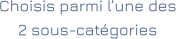
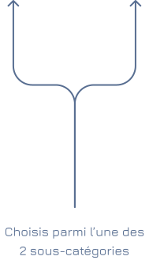

×
Accueil
Projets
Assistance à Maîtrise d'Ouvrage Déléguée (AMO)
Appuis institutionnels
Projets Études Architecturales et Techniques
Carrousel
Contact
Assistance à Maîtrise d'Ouvrage Déléguée (AMO)
Appuis institutionnels
Projets Études Architecturales et Techniques
Bâtiments institutionnels
Immeubles et Villa

